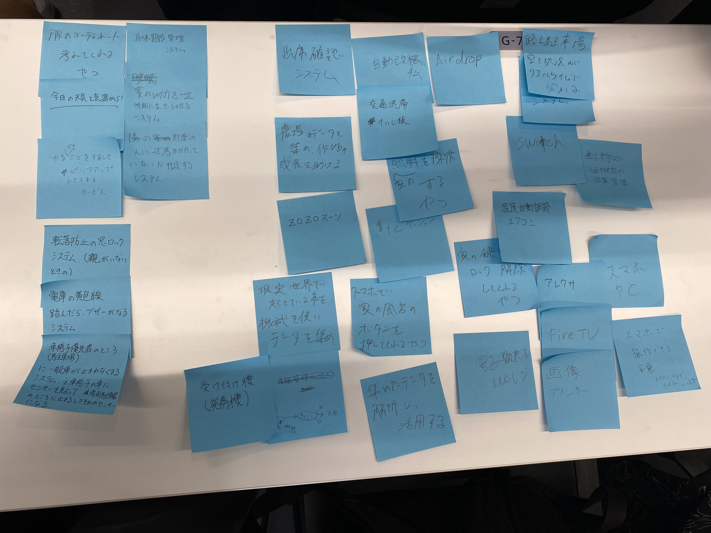
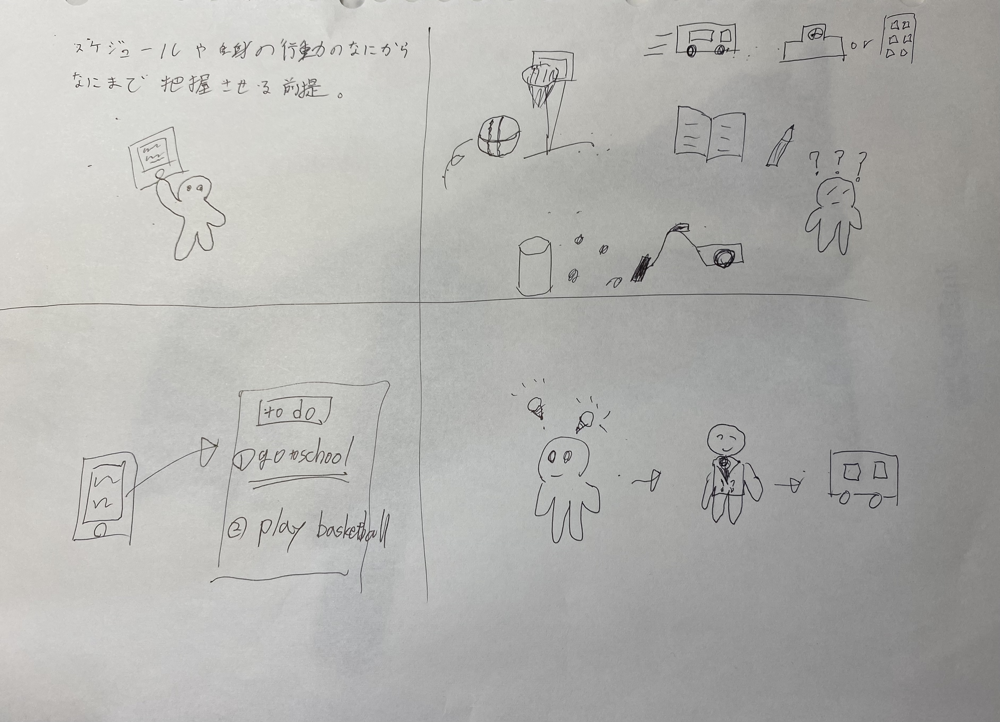
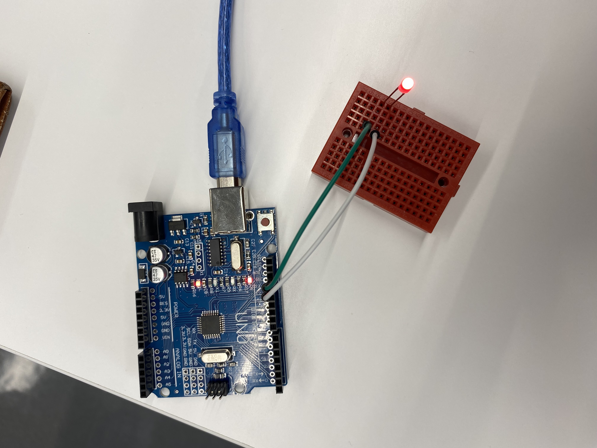

IOTとは
IoTは、"Internet of Things"の略で、モノのインターネットとも呼ばれます。
IoTは、インターネットに接続された様々なデバイスやセンサー、マシン、およびその他の物理的なオブジェクトを指します。
これらのデバイスは、相互に通信し、データを収集し、分析することができます。IoTは、自動化、省エネルギー、予測保守、
リアルタイムモニタリング、スマートホーム、スマートシティ、スマート農業、健康管理、交通制御など、多くの分野で利用
されています。IoTの普及により、より効率的かつ持続可能な世界を実現するための可能性が開かれています。chatgptより
IoTで何ができそうか？グループワークした内容

画像左側に固めてある部分がグループで考えた、IOTでできそうなことです。
幼児転落防止のため、親等の常に見守る人がいない場合に窓をロックするシステムや、賞味期限管理システム等が上がりました。

アイデアスケッチについて、これは端的にいいますとやること、やるべきことをピックアップしてくれるものです。
自身の行動や生活の全てを読み込ませ、状況や時に合わせたやること、やるべきことを教えてくれるものです。
マイコンボード発光画像
